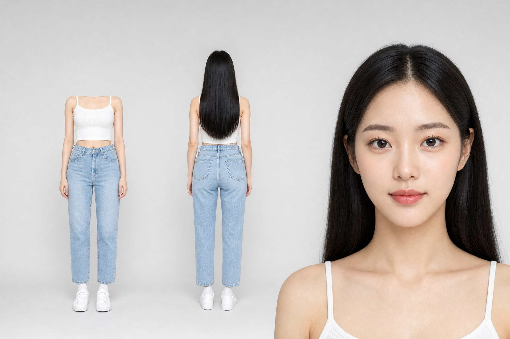

15초 · 480p · 16:9
제품 이름이 사건이 되는 틀
Dan의 짧은 오더 → GPT / Codex(Astra)의 영상 프롬프트. 2026-09-08 제작.
PADO 옥상 B판 · 파도 확장. Dan의 당시 긍정 평가는 A/B 중 어느 판인지 기록에서 구분되지 않습니다.
A판 기본 음용 영상도 보기
제품 사용 → 이름·비유가 실제 사건으로 → 인물 반응 → 제품 착지
당시 Dan 오더 원문
시댄스 2.5, 15초 영상, 480p, 16대 9 기준 가상 캔음료 15초 CF(실사) - 하윤이가 옥상 풀덱에서 캔을 따서 마시고 제품 히어로컷으로 마무리, 제품 히어로컷, 물방울, 카피 타이밍, 광고 문법(3초 훅->제품>엔드카드). 제품명은 PADO. 밝은 여름 고체도, BGM필수 시트 : 캐릭터 하윤 / PADO 캔 / 배경 옥상
새 제품에 바꿔 끼우는 문장 틀 · 이번 정리
[제품 종류] CF(실사) - [인물·의상 앵커]가 [장소 앵커]에서 [제품을 사용하는 동작]을 하자 [제품 이름·핵심 비유가 눈앞의 큰 사건으로 나타남]. [인물의 반응과 마무리]. [소재 포인트], 광고 문법([전개]), 제품명은 [제품명]. [톤], BGM필수.
하윤·옥상은 당시 보유 앵커의 예시입니다. 새 제품에서는 인물·의상·장소를 정하고 구독 GPT로 준비합니다. 물방울도 소재에 맞는 포인트로 바꿉니다.
공통 조절: 인물·의상·장소는 제품에 맞게 지정해 구독 GPT로 준비 / 히어로컷은 선택 / 소재 포인트·광고 전개는 변경 / 카피·엔드카드 새 문자는 후반 작업. 제품명은 대상 식별용이며 화면 글자 생성 지시가 아닙니다.
당시 앵커와 이미지 역할



제작 경위와 남은 한계
- 원래 짧은 오더와 실제 제출 프롬프트는 다른 문서입니다. 아래에 둘 다 보존했습니다.
- 기본 음용 A판과 캔에서 파도가 덮치는 B판이 있습니다. B판을 대표 영상으로 표시하고 A판도 함께 볼 수 있게 했습니다.
- 실제 프롬프트에도 시간 구간·카메라·음악 지시가 있었습니다. 짧게 썼기 때문에 성공했다고 단정하지 않습니다.
실제 제출 · B판 파도 확장
Photorealistic 15-second summer beverage commercial, 16:9, bright high-key daylight, saturated cinematic colors. Character Hayun (image 1), rooftop pool deck (image 3), PADO can (image 2). 0-3s HOOK: hot lazy afternoon, Hayun slumped on a lounge chair by the pool, heat shimmer in the air, she reaches for the ice-cold PADO can and pulls the tab — sharp 'psst'. 3-8s: a huge wave of sparkling fizz bursts from the can opening and rolls toward her in dramatic slow motion like an ocean wave, cool water and droplets wash over her, her eyes snap open and she laughs, sunlit droplets flying everywhere. 8-12s: she pushes wet hair back and takes a long refreshing sip, the pool surface behind her rippling like waves, bright blue sky. 12-15s PRODUCT HERO ENDCARD: the wave pulls back and drains away behind the can, leaving only the PADO can standing center frame on a clean bright white-blue background, water droplets beading on the metal, slow camera push-in and hold. Audio: ambient summer heat and cicadas in the hook, ocean-wave crash synced with the fizz burst, then upbeat dynamic summer pop BGM with a beat drop, resolving cleanly on the hero shot. Consistent face, can design and location across all shots.
실제 제출 · A판 기본 음용
Photorealistic 15-second summer beverage commercial, 16:9, bright high-key daylight, crisp saturated colors, clean commercial cinematography. Character Hayun (image 1) on a rooftop pool deck (image 3) holding a PADO can (image 2). 0-3s HOOK: extreme close-up of the ice-cold PADO can, condensation droplets sliding down the metal, Hayun's fingers pull the tab — sharp crisp 'psst' hiss and fizz, tiny mist bursts. 3-8s: cut to medium shot, Hayun laughs, tilts the can and drinks, sunlight glinting on water in the pool behind her, hair moving in a light breeze, refreshed expression, exhale. 8-12s: slow-motion splash of water droplets around the can as she lowers it, blue sky and pool reflections. 12-15s PRODUCT HERO ENDCARD: the PADO can rotates alone at center frame on a clean bright white-blue background, water droplets beading on the can, soft glow, camera pushes in slowly and holds. Upbeat bright summer pop BGM throughout, energetic beat drop at the hook, music resolves cleanly on the final hero shot. Consistent face, can design and location across all shots.
확인한 자료
reference_library\production_learning\cases\001_pado_astra_recovered_prompts.mdcoordination/outbox/claude_to_codex_handoff_orderframe_1117.md
당시 자료는 참고용으로 보존했습니다. 현재 새 작업에 과거 조건·문자·히어로컷을 무조건 적용하지 않으며, 이 탭은 생성 요청을 보내지 않습니다.